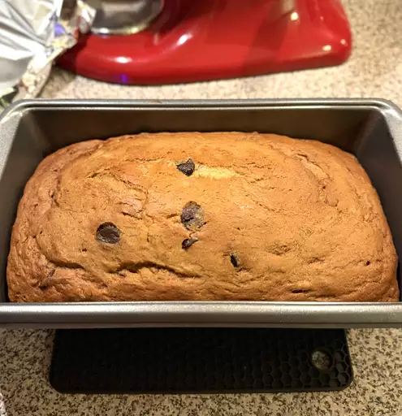

Banana Bread

This banana bread recipe creates the most delicious, moist loaf with loads of banana flavor.
Why compromise the banana flavor? Friends and family love my recipe and say it's by far the best! It tastes wonderful toasted. Enjoy!
Ingredients
- Flour: All-purpose flour gives the banana bread structure.
- Baking soda: Baking soda acts as a leavener, which means it helps the banana bread rise.
- Salt: A pinch of salt enhances the overall flavor, but it won't make the loaf taste salty.
- Butter: A stick of butter lends richness, moisture, and irresistible flavor.
- Brown sugar: Brown sugar sweetens things up and adds a hint of warmth.
- Eggs: Eggs act as a binding agent, which means they hold the batter together.
- Bananas: Of course, you'll need bananas! Choose overripe bananas.
Steps
- Combine the dry ingredients in one bowl.
- Beat the butter and sugar in another bowl. Add the eggs and mashed bananas.
- Add the wet mixture to the dry mixture.
- Pour the batter into a loaf pan and bake in a preheated oven.
Home